1.
Marcos trabajó 30 horas esta semana y ganó a $7.50 por hora. Su amigo Andrés ganó a $9.00 por hora. ¿Cuántas horas debió trabajar Andrés para igualar el ingreso de Marcos en 30 horas?
Banco de práctica · Matemáticas
Un banco completo de práctica que cubre razones, geometría, álgebra, estadística, conversión de unidades, y más — el mismo tipo de preguntas que encontrarás en la prueba real. Trabaja cada pregunta antes de revisar la respuesta.
1.
Marcos trabajó 30 horas esta semana y ganó a $7.50 por hora. Su amigo Andrés ganó a $9.00 por hora. ¿Cuántas horas debió trabajar Andrés para igualar el ingreso de Marcos en 30 horas?
2.
Laura quiere saber cuánto representan en °F, 22 °C; si utiliza la siguiente fórmula, ¿qué resultado obtendrá redondeado a la unidad más próxima?
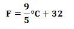
3.
Carlos llena su tanque con 32 galones. Si le queda ¼ de tanque, ¿cuántos galones ha usado?
4.
Leticia tiene un terreno que mide
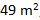
¿Cuánto mide cada lado del terreno si forma un cuadrado perfecto?
5.
Obtén el área de la siguiente figura.
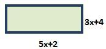
6.
Si Armando tiene un trozo de madera que mide 8 pies, ¿cuántos trozos de 3 pulgadas puede obtener? (1 pie = 12 pulgadas)
7.
El matrimonio Martínez quiere poner una pequeña alberca en su patio. Si quieren que mida 6 metros de diámetro y 1.5 metros de profundidad, ¿cuál es el volumen total de la alberca?
8.
¿Cuál es el interés ganado con un capital de $7,000.00 al 14% anual en 15 meses?
9.
Si Melisa usa 3 tazas de harina para preparar 2 tartas, ¿cuántas tazas necesitará para preparar 5 tartas?
10.
Un poste de 25 pies forma una sombra de 15 pies de largo a cierta hora del día. Si quieren poner un cable de tensión que vaya de la punta del poste al extremo donde termina la sombra, ¿cuánto debe medir el cable de tensión? Redondea tu respuesta a la unidad más cercana.
11.
En un triángulo rectángulo el ángulo "a" mide (3x−15) y el ángulo "c" mide (x+25). ¿Cuál es la medida del ángulo "a"?
12.
Julia tiene 40 pies de tela para diseñar cortinas. Si cada cortina va a medir 2 pies con 6 pulgadas, ¿cuántas cortinas puede hacer?
13.
Estefanía necesita 8 segmentos de tela para hacer unas servilletas, si quiere que cada servilletero mida 1 pie con 9 pulgadas. ¿Qué cantidad de tela necesita? Representa tu respuesta en pies.
14.
Evalúa:
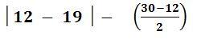
15.
Evalúa:
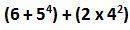
16.
La medida de los ángulos de un triángulo tiene una razón de 3:2:1. ¿Con cuál expresión se puede obtener la medida del ángulo menor?
17.
En un determinado momento del día, una persona de 6 ½ pies de altura proyecta una sombra de 4 pies. Al mismo tiempo, un poste proyecta una sombra de 25 pies. ¿Qué altura, en pies, tiene el poste?
18.
Una casa y un terreno cuestan $150,000.00. Si la casa cuesta el doble que el terreno, ¿cuánto cuesta la casa?
19.
El área de un círculo es 28 centímetros cuadrados. Calcula la medida aproximada del radio.
20.
¿Cuál expresión muestra el volumen de la siguiente figura si de largo mide "y" y un lado de su base cuadrangular es de 6?
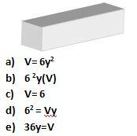
21.
Obtén el perímetro de la siguiente figura.
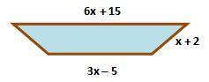
22.
Si en un juego de fútbol el equipo anfitrión obtuvo el triple de puntaje que el equipo visitante, ¿cuál expresión muestra el puntaje del equipo visitante si el puntaje de ambos equipos fue de 132?
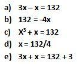
23.
Calcula el área de la siguiente figura.
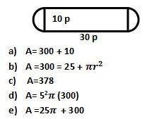
24.
Representa la siguiente cantidad en notación científica: .000048
25.
Juan y Marcos viajaron en línea recta. Juan se dirigió hacia el norte 25 millas mientras Marcos manejó 32 millas hacia el este. Una vez que se detienen, ¿aproximadamente qué distancia los separa a ambos?
26.
Adela organizó la fiesta de cumpleaños de su hija. Si acudieron 18 adultos y 20 niños, ¿cuál es la razón de niños a adultos?
27.
Un rectángulo mide 3x de ancho y 8x de largo. ¿Cuál es el área del rectángulo?
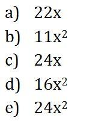
28.
En un triángulo rectángulo, un ángulo mide 10° más que el más chico. ¿Cuál expresión expresa la medida del ángulo más chico?
29.
La arista de un cubo mide 4x. ¿Cuál es el volumen del cubo?
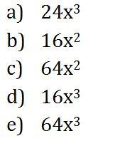
30.
Un tráiler va a ser cargado con 10 cajas cuadradas de 5 pies cada una. Si las dimensiones del tráiler son de 40 pies de largo, 8 pies de ancho y 10 pies de altura, ¿cuánto espacio libre queda en el tráiler?
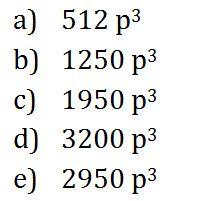
31.
Si el área de un rectángulo es de 18 y su base es el doble que lo ancho, ¿cuánto mide cada uno respectivamente?
Las preguntas 32 y 33 se basan en la siguiente gráfica:
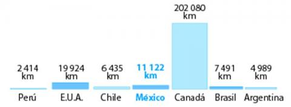
32.
¿Cuál es la diferencia de litorales entre México y Perú?
33.
¿Cuál es la mediana de la extensión litoral de estos países?
34.
¿Qué distancia hay entre el punto M y O?
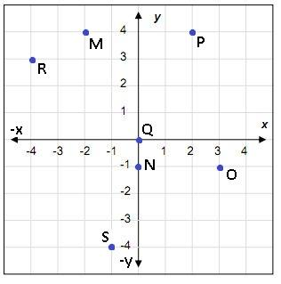
35.
Encuentra el valor de la siguiente expresión:
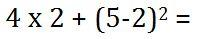
36.
Si el área de un círculo es de 220.96, ¿cuál expresión permitiría encontrar el radio?
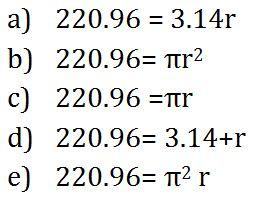
Las preguntas 37 a 40 se basan en la siguiente encuesta:
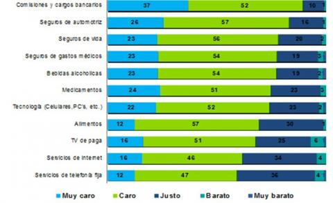
37.
¿Cuál es la moda de los gastos que son considerados muy caros?
38.
¿Cuál es el promedio de número de personas que consideran que los bienes y servicios son muy caros?
39.
¿Cuál es la razón de las personas que consideran que el gasto en alimentos es muy caro con las que consideran que es justo?
40.
Obtén la mediana de las personas que consideran que los bienes y servicios son justos.
41.
Una carnicería necesita surtir un pedido de 15 ¼ libras de carne, y solo cuenta con 1/3 de esa cantidad. ¿Cuánta carne le hace falta para completar el pedido?
42.
Martha va a cocinar una olla de pozole cuyas dimensiones son 50 cm de altura y tiene un radio de 3 cm. Si solo llena ½ de olla con agua, ¿qué espacio queda vacío?
43.
Armando tiene dos trabajos de medio tiempo. Por las mañanas cubre un horario de 8:30 a 12:15 p.m. y por las tardes de 5:00 a 9:30 p.m. (Descansa sábados y domingos). ¿Cuántas horas trabajó en las últimas dos semanas?
44.
Si a Armando le pagaron a 13 dólares la hora, ¿cuál expresión muestra cuánto ganó en esas dos semanas?
45.
Resuelve:
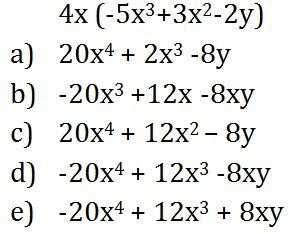
46.
La matrícula escolar de una escuela al inicio del año es de 246 estudiantes. Si al final del año solo se gradúan 2/3 de esa cantidad, ¿cuántos estudiantes desertaron en total?
47.
Carla camina ¼ de milla para llegar a su trabajo. ¿Cuánto camina, de ida y vuelta, durante la semana si trabaja 5 días a la semana?
48.
La suma de las edades de usted y su amig@ es igual a 48 años. Si usted es 6 años más joven que su amig@, ¿cuál es la edad de su amig@?
49.
¿Cuál sería el resultado de esta ecuación? −5(2w − 7) − 1 = −5w + 9
50.
Resuelve: ⅜w − 8 = ½ + ¾w
Este documento se subió con las preguntas y opciones de respuesta, pero sin una clave de respuestas marcada. Si tienes la clave del documento original, dile al instructor para que se agregue aquí — o si prefieres trabajar las preguntas en clase con explicaciones en vivo, esa es una buena alternativa también.